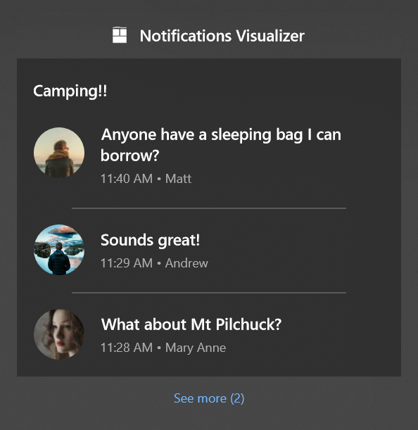

Toast headers
You can visually group a set of related notifications inside Action Center by using a toast header on your notifications.
Important
Requires Desktop Creators Update and 1.4.0 of Notifications library: You must be running Desktop build 15063 or later to see toast headers. You must use version 1.4.0 or later of the UWP Community Toolkit Notifications NuGet library to construct the header in your toast's content. Headers are only supported on Desktop.
As seen below, this group conversation is unified under a single header, "Camping!!". Each individual message in the conversation is a separate toast notification sharing the same toast header.

You can also choose to visually group your notifications by category too, like flight reminders, package tracking, and more.
Add a header to a toast
Here's how you add a header to a toast notification.
Note
Headers are only supported on Desktop. Devices that don't support headers will simply ignore the header.
new ToastContentBuilder()
.AddHeader("6289", "Camping!!", "action=openConversation&id=6289")
.AddText("Anyone have a sleeping bag I can borrow?");
In summary...
- Add the Header to your ToastContent
- Assign the required Id, Title, and Arguments properties
- Send your notification (learn more)
- On another notification, use the same header Id to unify them under the header. The Id is the only property used to determine whether the notifications should be grouped, meaning the Title and Arguments can be different. The Title and Arguments from the most recent notification within a group are used. If that notification gets removed, then the Title and Arguments falls back to the next most recent notification.
Handle activation from a header
Headers are clickable by users, so that the user can click the header to find out more from your app.
Therefore, apps can provide Arguments on the header, similar to the launch arguments on the toast itself.
Activation is handled identical to normal toast activation, meaning you can retrieve these arguments in the OnActivated method of App.xaml.cs just like you do when the user clicks the body of your toast or a button on your toast.
protected override void OnActivated(IActivatedEventArgs e)
{
// Handle toast activation
if (e is ToastNotificationActivatedEventArgs)
{
// Arguments specified from the header
string arguments = (e as ToastNotificationActivatedEventArgs).Argument;
}
}
Additional info
The header visually separates and groups notifications. It doesn't change any other logistics about the maximum number of notifications an app can have (20) and the first-in-first-out behavior of the notifications list.
The order of notifications within headers are as follows... For a given app, the most recent notification from the app (and the entire header group if part of a header) will appear first.
The Id can be any string you choose. There are no length or character restrictions on any of the properties in ToastHeader. The only constraint is that your entire XML toast content cannot be larger than 5 KB.
Creating headers doesn't change the number of notifications shown inside Action Center before the "See more" button appears (this number is 3 by default and can be configured by the user for each app in system Settings for notifications).
Clicking on the header, just like clicking on the app title, does not clear any notifications belonging to this header (your app should use the toast APIs to clear the relevant notifications).